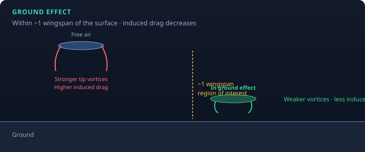

When the airplane is within about one wingspan of the surface,
the ground changes the wing’s downwash / tip-vortex pattern.
The practical result pilots feel: induced drag decreases.

Figure 1. Free air vs in ground effect. Height is measured in wingspans; the effect fades as you climb out of the bubble.
What pilots notice
Landing: after the flare, the airplane may float longer than expected—not “magic extra lift,” but less induced drag (and related pressure-field changes) near the runway.
Takeoff: the airplane may become airborne at a lower speed than it can sustain out of ground effect. Climbing out too aggressively / too slow can lead to a settle-back if you leave the ground-effect region without enough energy.
Most pronounced with low wings and when very close to the surface; still taught as “about one wingspan.”
Ties to other ideas
Induced drag is largest when slow / high CL — ground effect cuts that penalty.
AOA / stall still rules: ground effect does not repeal critical AOA.
Soft-field technique deliberately uses ground effect to get airborne and accelerate in the reduced-drag region (AFM/technique training).
Sources
FAA PHAK Ch. 5 — ground effect
MIT 16.687 — within one wingspan: induced drag ↓, early liftoff, float